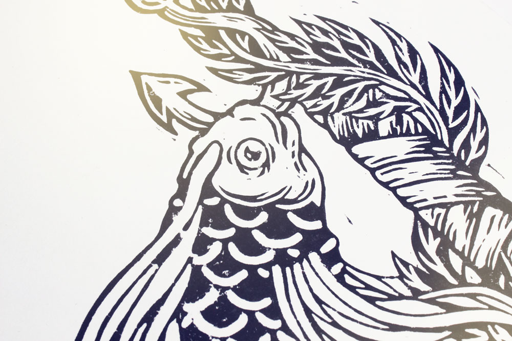
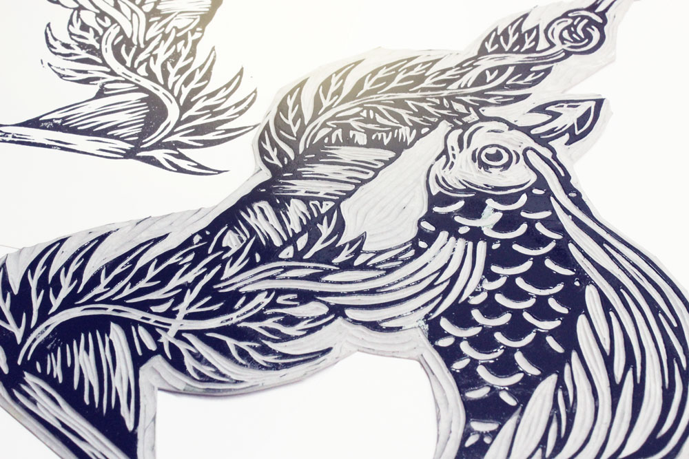
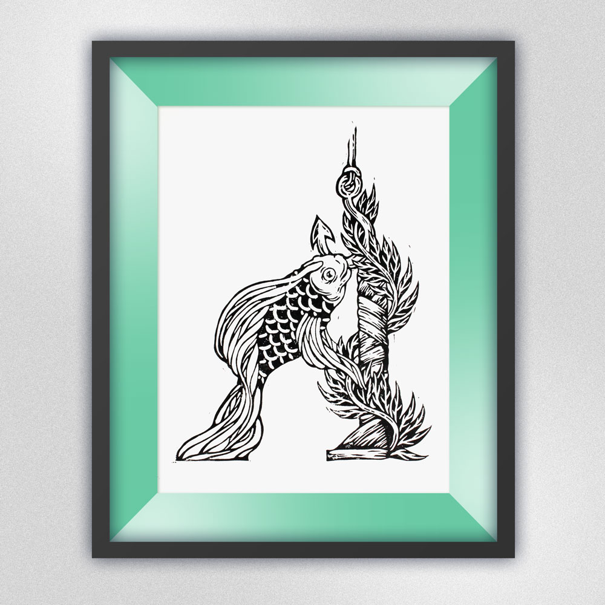
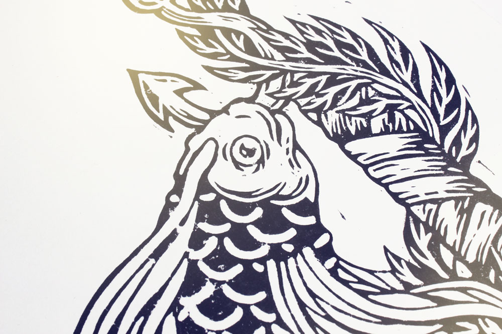
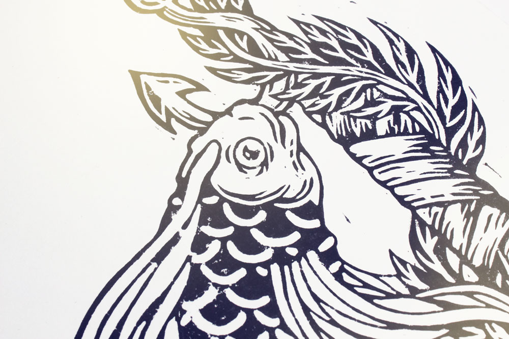
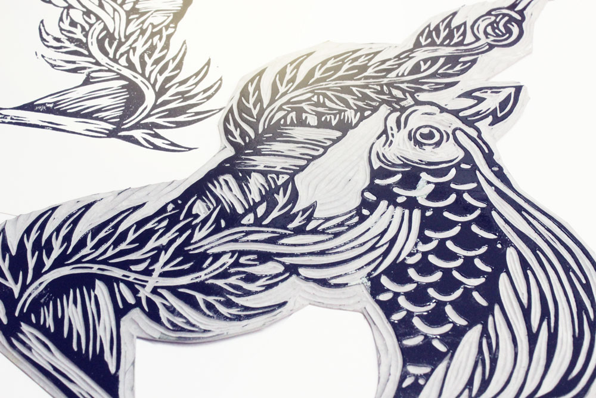
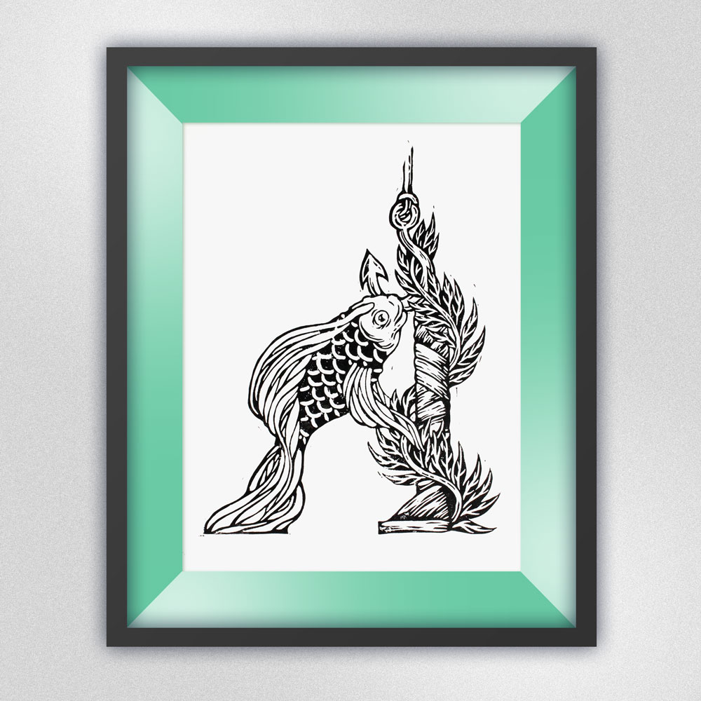
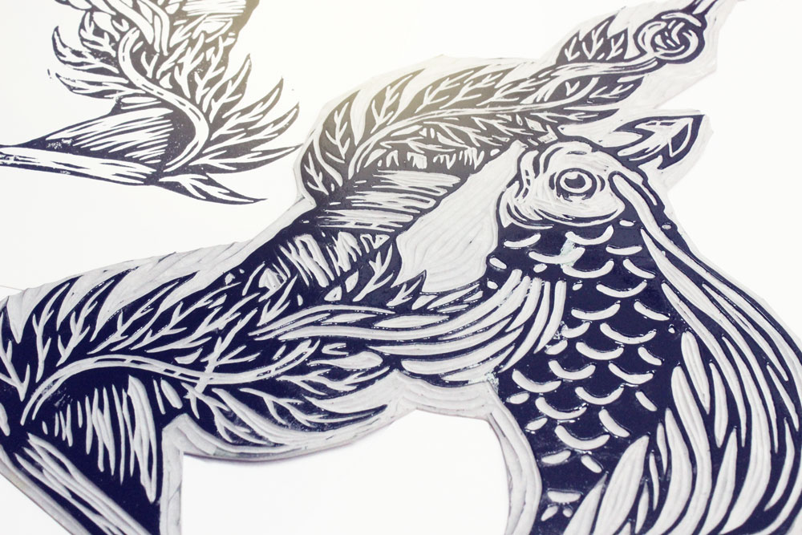
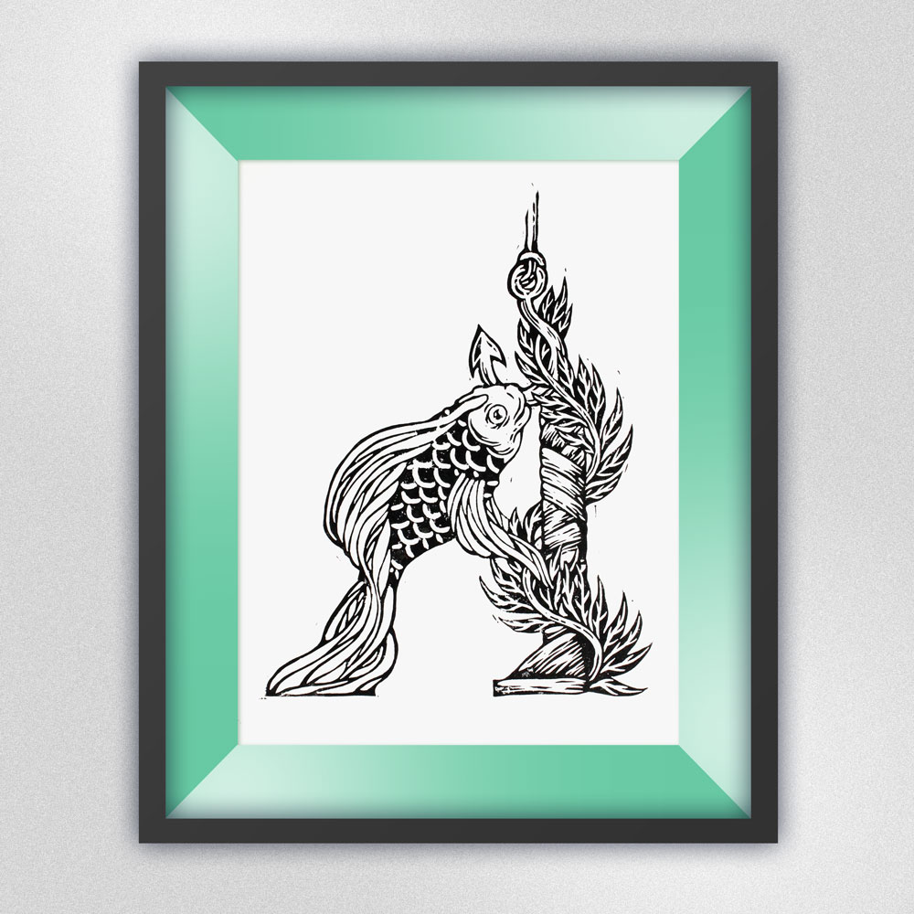

На главную
Иллюстрации
Линогравюры
Наброски
Контакты
"А"

Нанесение краски на печатную форму

Печатная форма (рельеф, вырезанный на линолеуме)

 

 Нанесение краски на печатную форму

Печатная форма (рельеф, вырезанный на линолеуме)

Нанесение краски на печатную форму

Печатная форма (рельеф, вырезанный на линолеуме)
